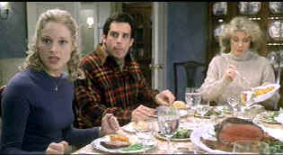

| Meet the
Parents (SE)/B+,A |
| Universal/2000/108/ANA
1.85 |
Meet the Parents is situational comedy delivered with very
entertaining results. The set-up is a familiar one to every day life. Boy loves with girl. Girl
takes him home to meet her family. The formula is rife with comic possibilities. In Meet the
Parents, the fabric is embroidered with a wonderful conceit: over protective Daddy is a former
CIA operative. Add a little grist to the mill by making the guy a male nurse. For those of you who
have ever tried training a cat, Meet the Parents brings it to a new order of hilarity.
 |
| Grace! ©Universal |
Just when Greg Focker is ready to pop the question to Pam Byrnes, a bit of
information about her father stops him cold. Pam and Greg head from Chicago to Long Island for
Pam's sister's wedding and a family introduction. Greg and Pam are well prepared for the trip with
carry on luggage, but life just ain't that simple. From the airport to the shores of Long Island,
Greg must find a way through a series of mishaps not especially conducive to marriage proposals.
Not all the jokes play brilliantly and some, like the Focker surname, are funny despite their lack
of originality. It's all in the delivery in the Focker case.
Some of the lessons to be learned in Meet the Parents? You might as
well tell the truth about how you feel about animals and never fondle a cat improperly. Cross
dressing is verboten in your girl friend's house. Champagne is not sold in drug stores on Long
Island. Former CIA operatives have a soft spot for Mom. Keep your briefs together during water
volley ball.
Director Roach presides over the film with a stylish hand. Timing is excellent,
settings on target, and the details enhance the action. The script by Jim Herzfeld and John Hamburg
milk the lexicon of suburban life with the delicious skill of a practiced farm maid.
The actors have a field day under the sharp comic direction of Jay Roach.
Ben Stiller is a natural as Greg Focker. Stiller's slightly off-center appearance and his ethnic
energy make almost any situation believable. Comedy comes natural to Stiller. He can run with a
joke like a natural shooter gunning basketballs through the hoop. Robert De Niro really shows off
his comic ability in Meet the Parents. De Niro, whose over the top performance as a gangster
in Analyze This proved successful, ups the comic ante significantly with Jack Byrnes. The
outtakes on this special edition are more fun than most you'll get to see. Who would believe that
De Niro, the so serious actor and consummate professional would be cracking up on the set so much.
The proof is in the outtakes.
Splendid DVD presentation with a first rate transfer. No enhancement
whatsoever to interfere with the beauty of the image. The colors are dead on accurate, fully
saturated in all lighting, with no edge smearing. Every detail is perfectly revealed with full
resolution bandwidth. There's punch to spare in this DVD presentation. Pictures jump off the screen
with the same pop as a Greg Focker volley ball spike. You can watch in DTS or Dolby Digital 5:1.
Surround information is accurately placed and dialogue delivered with clarity.
A chock full of fun special edition, Meet the Parents includes two
separate audio commentaries. Director Roach leads the pack including actors Stiller and Di Niro and
producer Jane Rosenthal through the ropes on one commentary. The second commentary offers a few
more technical observations with Roach and editor Jon Poll. Stiller is especially funny and
Rosenthal proves an excellent navigator. The revelation of De Niro's cigarette secret is
particularly funny owing to Stiller's reaction.
|
|
|
|


The DVD Forum is an international association of hardware
manufacturers, software firms and other users of Digital Versatile Discs (the "DVD
Format"), created for the purpose of exchanging and disseminating ideas and information about
the DVD Format and its technical capabilities, improvements and innovations.

DVD
Demystified makes it all clear.The official Internet DVD FAQ for the rec.video.dvd
Usenet newsgroups.

A hallmark of Film Threat Magazine is irreverence. The transition from print to the Internet leaves
the acid base in tact. Humorous criticism with a vengeance.

The
Movie Poster Archive includes extensive poster images from the films of stars like Susan Hayward,
Kirk Douglas, Katharine Hepburn and many more. Our featured star is Doris Day.

Jou Du/A,B-

A sexy Chinese noir. Bold colors paint stirring emotions in a small
provincial town.
Annie Get Your
Gun/A,A-
Irving Berlin's brilliant musical gem is polished and preserved on this Warner DVD release. An
explosion of music, song, dance and color.
|